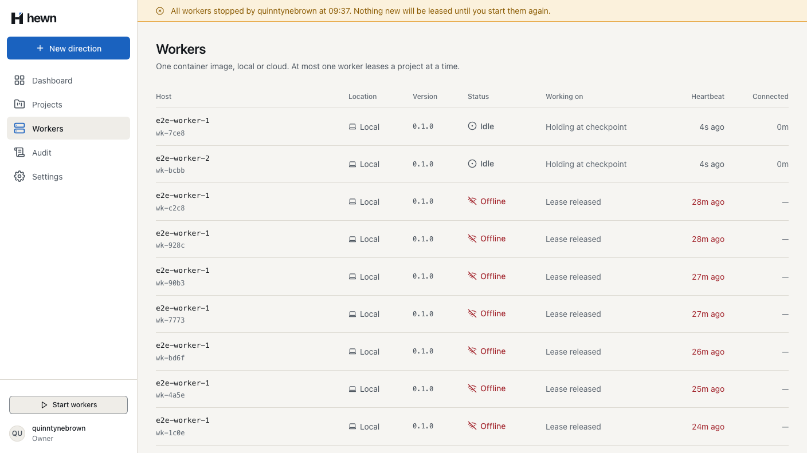
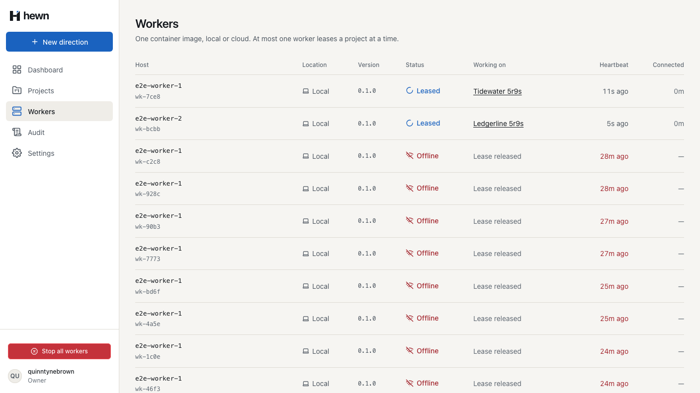
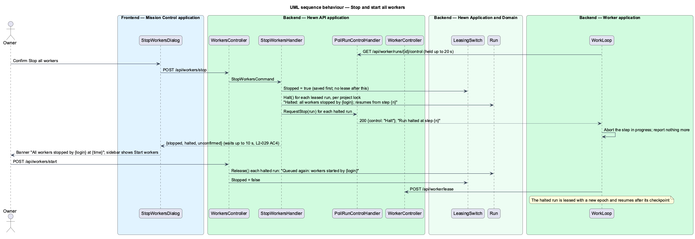
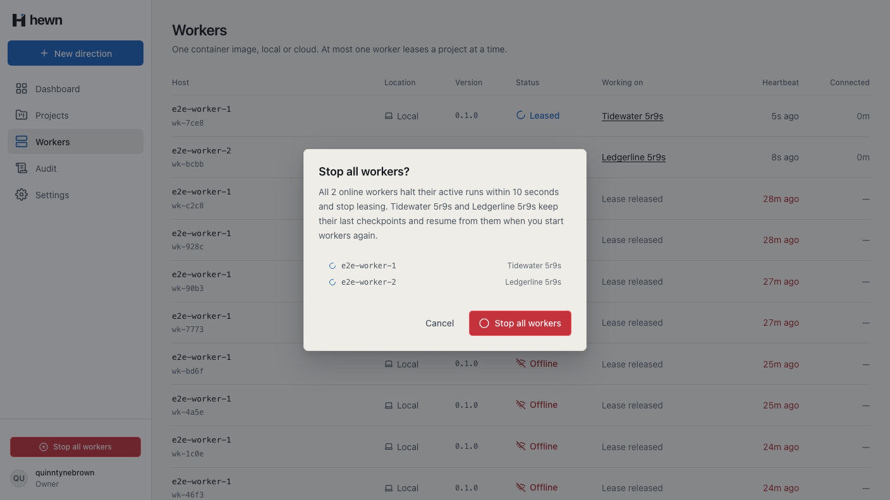
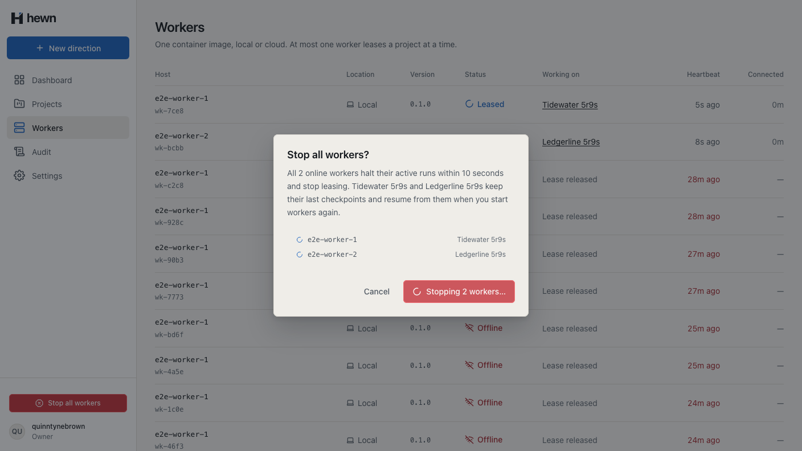
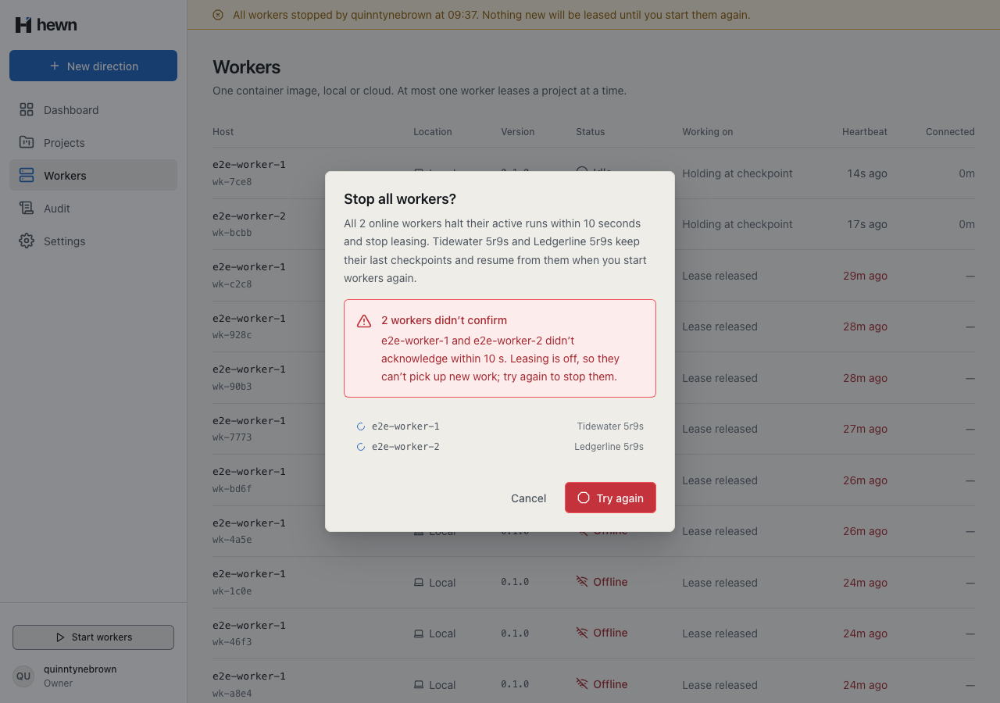
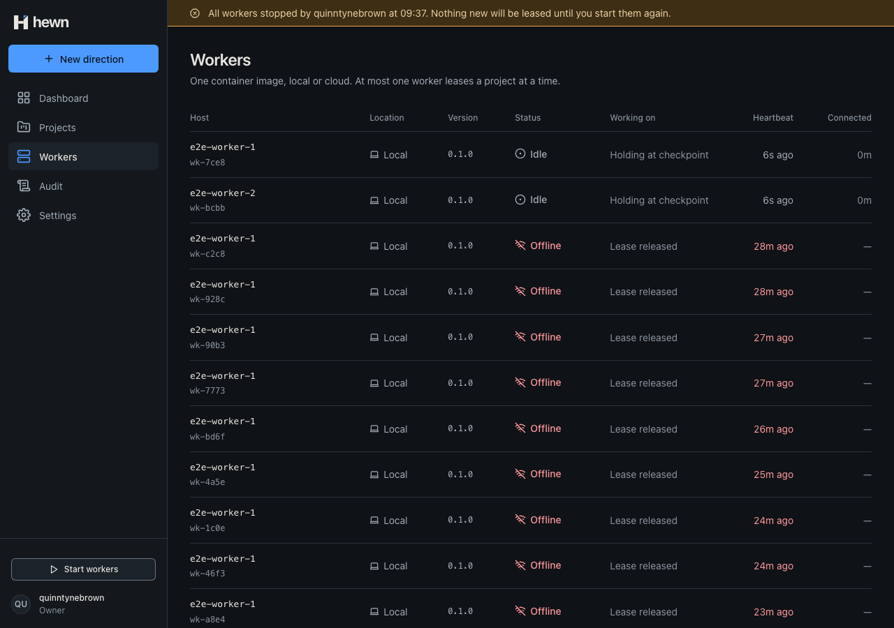
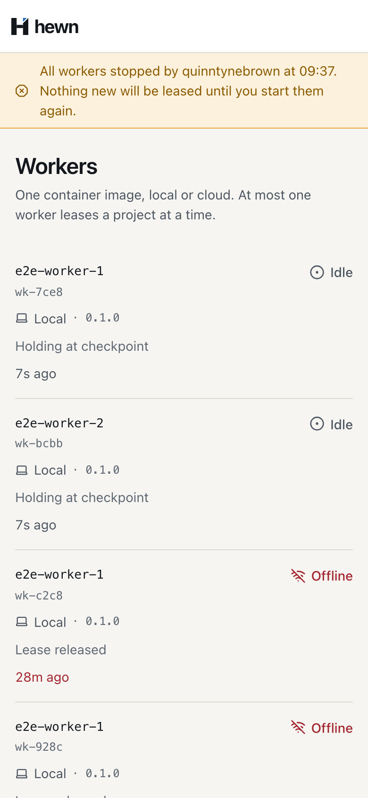
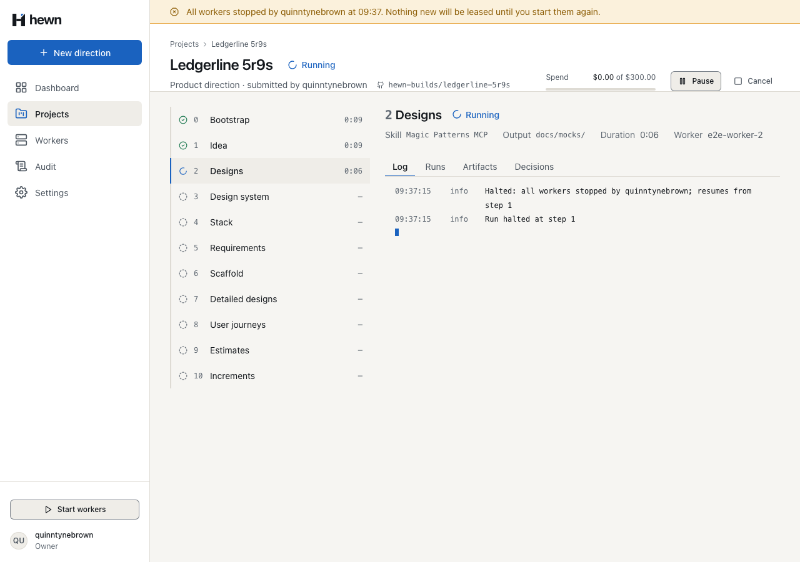
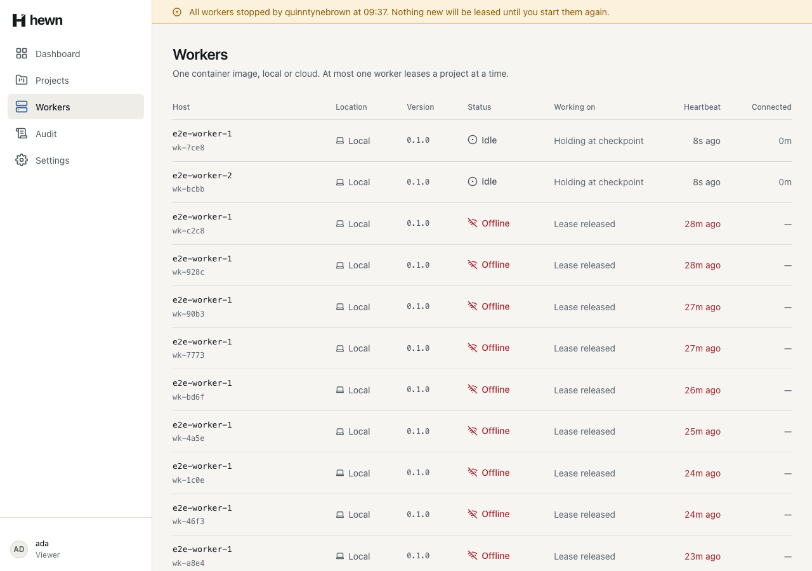

One switch that halts every run within ten seconds, and holds until you say go.



var granted = await db.Runs
.Where(r => r.Id == candidate.Id && r.Status == RunStatus.Queued)
.Where(r => !db.Runs.Any(o => o.ProjectId == candidate.ProjectId && o.Status == RunStatus.Leased))
// Checked in the same statement, so nothing is leased once Stop all workers has saved the switch.
.Where(r => !db.LeasingSwitches.Any(s => s.Stopped))
.ExecuteUpdateAsync(set => set
.SetProperty(r => r.Status, RunStatus.Leased)
.SetProperty(r => r.WorkerId, workerId)
.SetProperty(r => r.RanBy, workerId)
.SetProperty(r => r.StartedAt, r => r.StartedAt ?? now)
.SetProperty(r => r.LeaseEpoch, r => r.LeaseEpoch + 1)
.SetProperty(r => r.LeaseExpiresAt, expires),
public async Task Leasing_stays_stopped_after_a_server_restart()
{
// Nobody polls here, so a 1-second deadline keeps the test quick.
_factory.WithSettings(("Hewn:Control:StopDeadlineSeconds", "1"));
var (owner, _) = await TwoRunningAsync();
Assert.Equal(HttpStatusCode.OK, (await StopAsync(owner)).StatusCode);
var restarted = _factory.Restart();
await _factory.DisposeAsync();
_factory = restarted;
var after = await _factory.SignInAsync("quinntynebrown", Role.Owner);
Assert.True((await WorkersAsync(after)).GetProperty("leasing").GetProperty("stopped").GetBoolean());
Assert.Null(await (await _factory.RegisterWorkerAsync("hewn-cloud-eus-02")).LeaseAsync());
public async Task<StopWorkersResult> Handle(StopWorkersCommand command, CancellationToken cancellationToken)
{
await Leasing.SetAsync(db, true, user.Login, clock.GetUtcNow(), cancellationToken);
// A lease granted before the switch was saved shows up here; none is granted after it.
var leased = await db.Runs.AsNoTracking().Where(r => r.Status == RunStatus.Leased).Select(r => new { r.Id, r.ProjectId }).ToListAsync(cancellationToken);
var halted = 0;
foreach (var project in leased.GroupBy(r => r.ProjectId))
{
await events.LockAsync(project.Key, cancellationToken);
var ids = project.Select(r => r.Id).ToList();
foreach (var run in await db.Runs.Where(r => ids.Contains(r.Id) && r.Status == RunStatus.Leased).ToListAsync(cancellationToken))
{
run.Halt();
await RunLog.InfoAsync(db, events, run, $"Halted: all workers stopped by {user.Login}; resumes from step {run.CheckpointStep + 1}", clock.GetUtcNow(), cancellationToken);
halted++;
/// <summary>
/// Stop all workers (L2-029 AC4): the lease no longer fences anything, so the worker's writes are refused, and the
/// checkpoint is kept. The worker and epoch stay so its control poll can still hear the halt.
/// </summary>
public void Halt()
{
Status = RunStatus.Halted;
LeaseExpiresAt = null;
StopAcknowledgedAt = null;
}
status = await StatusAsync(query, cancellationToken);
}
if (status is not (RunStatus.Cancelled or RunStatus.Halted))
{
return null;
}
await AcknowledgeAsync(query.RunId, cancellationToken);
while (!lease.signal.aborted) {
try {
const control = await this.api.control(workerId, run, this.controlWaitSeconds, lease.signal);
if (control === 'Cancel') {
this.log('Cancelled; the run stops now', { runId: run.runId });
lease.abort(new Error('Cancelled by an Owner.'));
return;
}
if (control === 'Halt') {
this.log('Halted: all workers stopped; the run waits at its checkpoint', { runId: run.runId });
lease.abort(new Error('All workers stopped by an Owner.'));
return;
}
} catch (error) {
// A lost lease is the heartbeat's to handle; otherwise wait a little and poll again.
if (lease.signal.aborted || error instanceof LeaseLostError) return;
public async Task<LeasingDto> Handle(StartWorkersCommand command, CancellationToken cancellationToken)
{
var halted = await db.Runs.AsNoTracking().Where(r => r.Status == RunStatus.Halted).Select(r => new { r.Id, r.ProjectId }).ToListAsync(cancellationToken);
foreach (var project in halted.GroupBy(r => r.ProjectId))
{
await events.LockAsync(project.Key, cancellationToken);
var ids = project.Select(r => r.Id).ToList();
foreach (var run in await db.Runs.Where(r => ids.Contains(r.Id) && r.Status == RunStatus.Halted).ToListAsync(cancellationToken))
{
run.Release();
await RunLog.InfoAsync(db, events, run, $"Queued again: workers started by {user.Login}", clock.GetUtcNow(), cancellationToken);
}
await db.SaveChangesAsync(cancellationToken);
await events.PublishAsync(cancellationToken);
}





api.halt();
await vi.advanceTimersByTimeAsync(10);
expect(finished).toEqual(['s3.1']);
expect(logs).toContain('Halted: all workers stopped; the run waits at its checkpoint');
await vi.advanceTimersByTimeAsync(30_000);
expect(finished).toEqual(['s3.1']);
expect(api.count('result')).toBe(0);
// Start workers: the same run is leased again with a new epoch and carries on from step 2.
api.requeue({ ...run, epoch: 2, checkpointStep: 1 });
await vi.advanceTimersByTimeAsync(40_000);
expect(finished).toEqual(['s3.1', 's3.2', 's3.3']);
expect(api.calls.filter((c) => c.method === 'step').map((c) => c.step)).toEqual([1, 2, 2, 3]);
expect(api.count('result')).toBe(1);
5 new, real API
1 and 10 new
2 new pipeline tests with real workers
await workers.stopAllButton.click();
const pressed = Date.now();
await workers.stopConfirm.click();
await expect(workers.stopDialog).toHaveCount(0, { timeout: 10_000 });
expect(Date.now() - pressed, 'every worker halted within 10 seconds').toBeLessThan(10_000);
await expect(workers.stoppedBanner).toHaveText(
/All workers stopped by quinntynebrown at \d\d:\d\d\. Nothing new will be leased until you start them again\./,
);
await expect(workers.startWorkersButton).toBeVisible();
await expect(workers.stopAllButton).toHaveCount(0);
await expect(workers.rows.filter({ hasText: 'Holding at checkpoint' })).toHaveCount(2);

